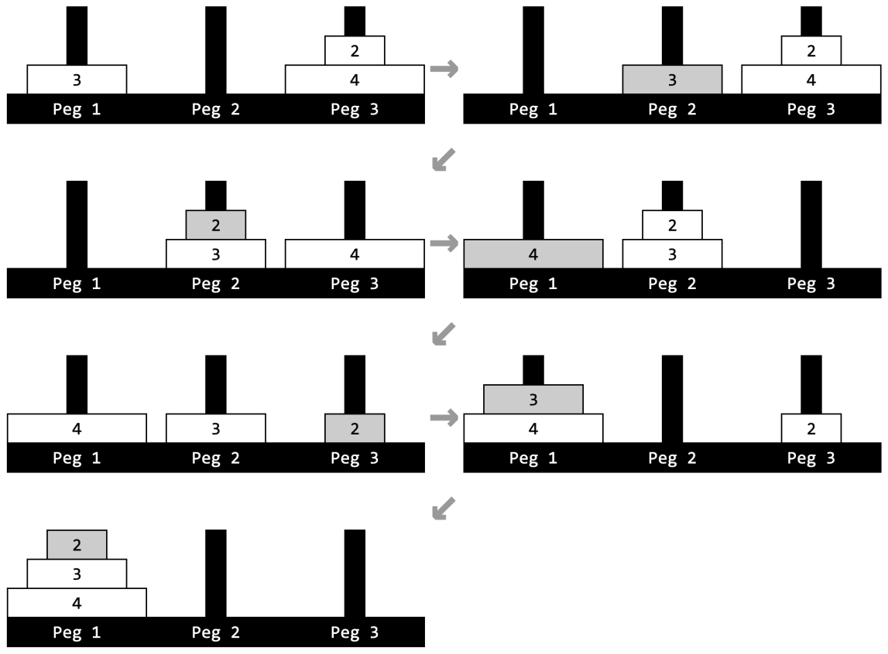

Tower of Hanoi
While visiting Hanoi to compete in The ICPC Asia Pacific Championship last year, you learned about the famous Tower of Hanoi problem. In the problem, there are three rods and several disks of distinct radii, which can slide onto any rod. The rods are numbered from \(1\) to \(3\). At any point in time, each disk must be stacked on one of the rods, and the disks stacked on each rod must be arranged in increasing order of radius from top to bottom. In one step, you can move the disk on top of one rod to the top of another rod, provided this move does not violate the restriction above. The goal is to move all the disks to rod \(1\) in the minimum number of steps.
You are solving an extension of this famous problem. You have a sequence of \(n\) integers \(p_1, p_2, \ldots, p_n\), the initial values of which are given to you.
You are also given \(q\) operations. Each operation is either of the following:
Change operation: Two integers \(x\) and \(y\) are given. This operation requires you to change the value of \(p_x\) to \(y\).
Solve operation: Two integers \(l\) and \(r\) are given. This operation requires you to solve the Tower of Hanoi problem with \(r - l + 1\) disks of radii \(l, l + 1, \ldots, r\), where the disk of radius \(i\) is initially stacked on rod \(p_i\), for each \(l \le i \le r\). The order of the disks initially stacked on each rod satisfies the restriction explained earlier. You need to find the minimum number of steps to move all disks to rod \(1\) modulo \(998\,244\,353\).
Your task is to perform all the given operations sequentially.
Input
The first line of input contains two integers \(n\) and \(q\) (\(1 \le n \le 100\,000; 1 \le q \le 100\,000\)). The second line contains \(n\) integers representing the initial values of \(p_1, p_2, \ldots, p_n\) (\(1 \le p_i \le 3\)). The next \(q\) lines represent the operations in the order they are to be performed. Each line is in one of the following formats:
- “
c\(x\) \(y\)” (\(1 \le x \le n; 1 \le y \le 3\)) to apply a Change operation for the specified integers \(x\) and \(y\). - “
s\(l\) \(r\)” (\(1 \le l \le r \le n\)) to apply a Solve operation for the specified integers \(l\) and \(r\).
The input contains at least one Solve operation.
Output
For each Solve operation, in order, output the minimum number of steps to solve the Tower of Hanoi problem with disks of radii \(l, l + 1, \ldots, r\) modulo \(998\,244\,353\).
4 4 2 3 1 3 s 2 4 s 1 3 c 3 3 s 2 4
6 2 7
Explanation for the sample input/output #1
The first operation requires you to solve the Tower of Hanoi problem with disks of radii \(2\), \(3\), and \(4\) initially stacked on rods \(3\), \(1\), and \(3\) respectively. All disks can be moved to rod \(1\) in \(6\) steps as illustrated by Figure D.1.

The second operation requires you to solve the Tower of Hanoi problem with disks of radii \(1\), \(2\), and \(3\) initially stacked on rods \(2\), \(3\), and \(1\) respectively.
The fourth operation requires you to solve the Tower of Hanoi problem with disks of radii \(2\), \(3\), and \(4\) initially stacked on rods \(3\), \(3\), and \(3\) respectively.